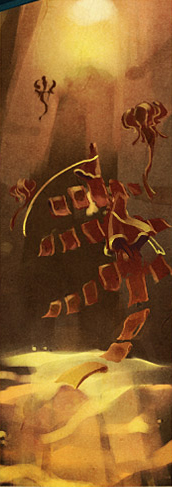

Descubra uma experiencia abstrata e instrospectiva.
Journey e um jogo que tem como intuito
ser uma experiencia imersiva
atraves
do minimalismo, visual rico, emocoes, vibracoes
e seu elemento fundamental: a trilha sonora.
Trailer:
Sobre Journey:
.png)
Em journey voce assume o papel do protagonista chamado 'The Traveler'.
O Viajante nao possui genero e seu nome, idade e historia sao desconhecidos.
Voce tera a possibilidade de viajar por um vasto deserto e tera apenas uma missao: Alcancar o cume, o
ponto mais alto de uma montanha.
Uma oportunidade unica, rara e desconhecida.
Pode ser que durante a sua jornada voce encontre outro jogador. Um estranho, desconhecido, qual nem seu nome podera saber. E a unica forma de comunicacao que estara disponivel sao notas musicais.
92% de 100%
by metacritic
O lancamento de Journey atraiu mais de 100 premios da industria
e elogios da midia, com alguns nomeando o jogo como seu 'Jogo do Ano' em 2012.
"Uma obra-prima gloriosa, pensativa e comovente" - Entertainment Weekly
Uma das experiencias de jogo mais incríveis da minha vida.
Um jogo incrivel e emocionante.
Cenarios:


Descubra uma musica da trilha sonora de Journey
"Um grande concerto para violoncelo onde voce e o solista e todos os outros instrumentos representam o
mundo ao seu redor" - Alexsandro
Clique e descubra:
Screenshots:
.jpeg)
.jpeg)
.jpeg)
.jpeg)
Avaliacao dos Usuarios:
Metrica atualizada conforme voce usuario classifica o site e sua experiencia com o mesmo.